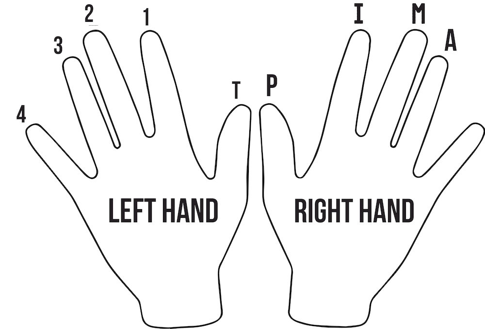

Finger numbers
Left hand fingers are named by the numbers one through four beginning with the index finger. Students who have previously studied piano are often initially confused by guitar fingerings because piano finger numbers begin with the thumb. The lesser used left thumb is notated as “T.”
Classical guitar music uses a system of right-hand fingerings. Each finger is assigned a letter derived from the Spanish word for each finger: P for pulgar (thumb), I for indice (index), M for medio (middle), and A for anular (ring).
On guitar directions
Referring to directions on guitar can be confusing. As a rule of thumb, always refer to direction in terms of pitch rather than physical directions. For instance: up the neck means playing a higher-sounding fret. Likewise, the high E string is the first string because it is the highest-pitched string.

Back: Tuning Next: Hand position